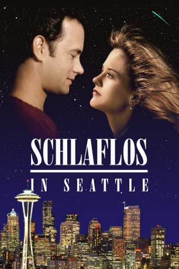

Auszeichnungen: für 2 Oscars nominiert
 gesehen am 02.08.2015
gesehen am 02.08.2015Alternativ: Sleepless in Seattle
Auszeichnungen: für 2 Oscars nominiert gesehen am 02.08.2015
 
 IMDB-Wertung: 6.8 / 10
IMDB-Wertung: 6.8 / 10  Metascore:
Metascore: 
Sam ist seit einem Jahr Witwer, und sowohl er als auch sein Sohn Jonah sind darüber sehr unglücklich. Eines Tages bringt Jonah seinen Vater daher in eine Radiosendung, wo er in der Öffentlickeit über seine Probleme reden kann. Die Folge: Sam bekommt massenweise Post von weiblichen Verehrerinnen, darunter auch von Annie aus New York, die sich auf den Weg von New York nach Seattle macht, um ihren Traummann kennenzulernen.
Jahr: 1993
Dauer: 105 Minuten
FSK: 6
Land: USA Studio: TriStar PicturesTonspuren:
Untertitel: Deutsch,
Auflösung: 720p (1280x696) Größe: 2426 MB
Regisseur: Nora Ephron
Drehbuch: Jeff Arch, Nora Ephron, David S. Ward, Jeff Arch
Soundtrack: Marc Shaiman
Darsteller:
 Tom Hanks als Sam Baldwin
Tom Hanks als Sam Baldwin Rita Wilson als Suzy
Rita Wilson als Suzy Victor Garber als Greg
Victor Garber als Greg Meg Ryan als Annie Reed
Meg Ryan als Annie Reed David Hyde Pierce als Dennis Reed
David Hyde Pierce als Dennis Reed Frances Conroy als Irene Reed
Frances Conroy als Irene Reed Tom Tammi als Harold Reed
Tom Tammi als Harold Reed Caroline Aaron als Dr. Marcia Fieldstone
Caroline Aaron als Dr. Marcia Fieldstone LaTanya Richardson Jackson als Harriet
LaTanya Richardson Jackson als Harriet Rosie O'Donnell als Becky
Rosie O'Donnell als Becky Dana Ivey als Claire
Dana Ivey als Claire Rob Reiner als Jay
Rob Reiner als Jay Gaby Hoffmann als Jessica
Gaby Hoffmann als Jessica Barbara Garrick als Victoria
Barbara Garrick als Victoria Michael Badalucco als New York Taxi Dispatcher
Michael Badalucco als New York Taxi Dispatcher Nick Taylor als Bartender , uncredited
Nick Taylor als Bartender , uncreditedDatei: X:\1993\Schlaflos in Seattle (1993, FSK6, 1280x696).mkv seit 02.07.2015
Festplatte: HD 1992-1995
 Es gibt insgesamt 68 Filme in der Gruppe '1993'
Es gibt insgesamt 68 Filme in der Gruppe '1993'